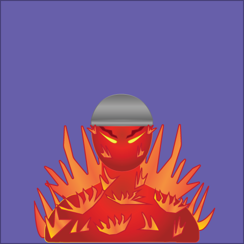

Ignis, a young pirate mercenary, stands at a height of merely 4 feet and 9 inches. Despite his short stature, he is known for his level head and calm demeanor. Hailing from the infamous Crimson coast, he is marked by a unique trait - a perpetual aura of fire that surrounds him at all times. This fiery characteristic is a common feature among the individuals of his homeland, who are known for their fearless and tenacious nature. As a fledgling pirate, Ignis is still in the process of carving his own path in the treacherous world of piracy, but he is determined to make a name for himself and become a force to be reckoned with.
